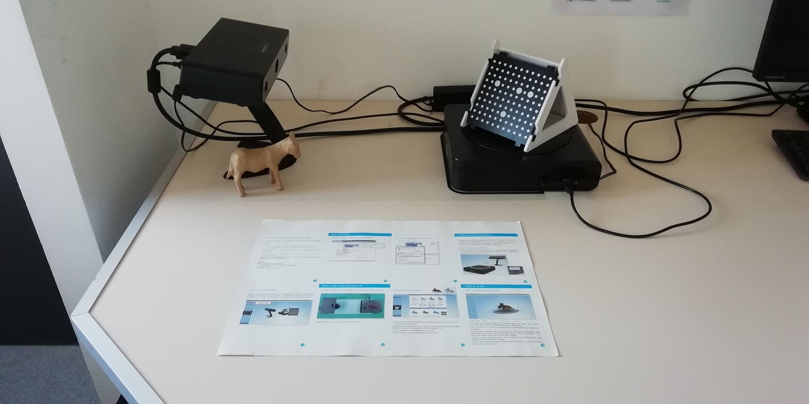
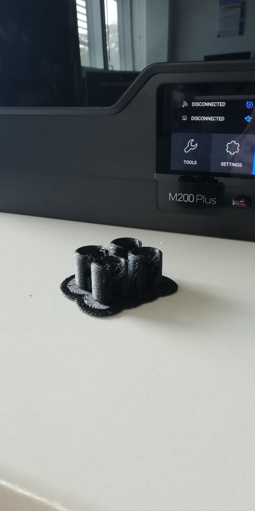
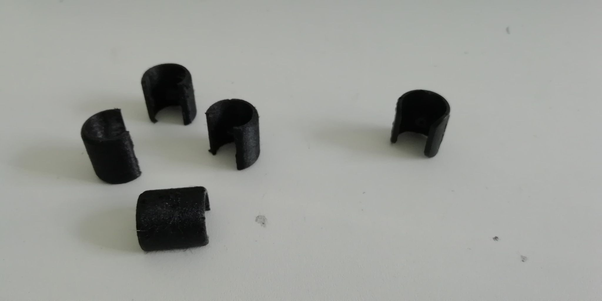

A Broken Stool
My parents finally bought some new stools that are actually able to support my weight!! 😅 With a metal structure and a dark wooden-like top they look great... but there is an issue. One of them came with a missing foot making it wobbly and increasing the risk of scratching the floor.
So I came to the rescue and proposed to create a replacing part thanks to 3D Scanning and 3D-printing.
3D Scan
Knowing there was a 3D Scanner that I had never used at my school's FabLab, the initial goal was to 3D Scan one of the other feet and 3D-print it.
The scanner is an EinScan-S and is made of two parts: the camera/lightning module and the rotating plate. It works by taking multiple pictures of the object under different position and lightning conditions.
With some trial and error (and a little bit of assistance from a FabLab Manager) I managed to make the
3D
scanner work.
Beware that there is a dedicated on/off switch for the light porjector. 😅 Other than that the process
is
rather straight forward. You follow the calibration protocol described in the software then
you place the object you want to scan on the rotating plate and just like that you can start scanning.
Unfortunately, this particular scanner is not very precise and is not recommanded for objects that are dark, concave and smaller than 30x30x30 mm... Which happens to be exactly what I had. 🫠 Not being a Blender wizard I didn't manage to transform the scan result into a beautiful model ready to be printed.
3D Design
Back to the drawing board! I fired up my trusty Fusion 360 and started designing a proper model. And within a few clicks I obtained this:
Much better! Let's print it!
3D Print
As the feet of the stool need to be able to sustain a lot of stress (due to the weight they will have to support or the shocks when the stool is moved around) I had to avoid fragile materials. Fortunately, I found a spool of Z-SEMIFLEX which is both resistant and flexible.
After a few hours of work on a Zortrax M22 Plus I obtained four feet that look similar to the original one.
|  |

|
|---|---|
|  | |
But do they fit??
To be continued...